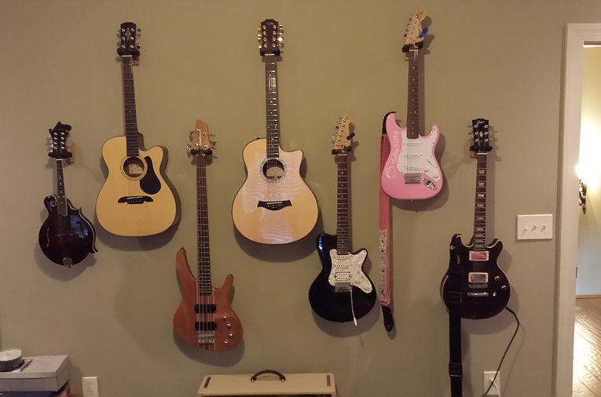
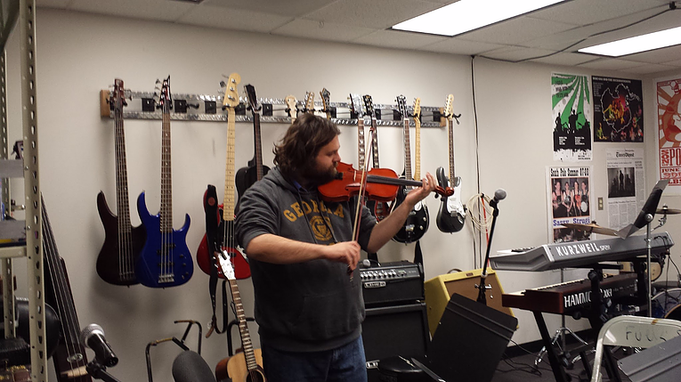

Music
Music has always been a very important part of our family. I play
trumpet, guitar, and violin; though, the past few years I haven't had the
time to focus on it like music as much as I would like. I started
playing trumpet in middle school and played for several years. In high
school, I started playing a little guitar as well, but I really only play
a little here and there.

Our family wall of guitars. We actually have way more than this, but
there was only so much wall space in my mom's music room! I started
playing violin a couple of years ago in grad school. The picture below
is from the music room at the South Pole, where I was able to jump on a
violin for a few minutes!
